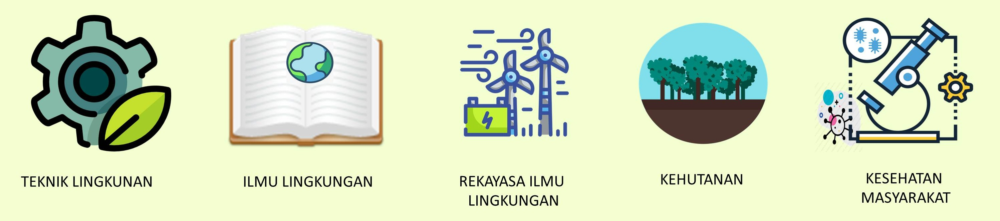
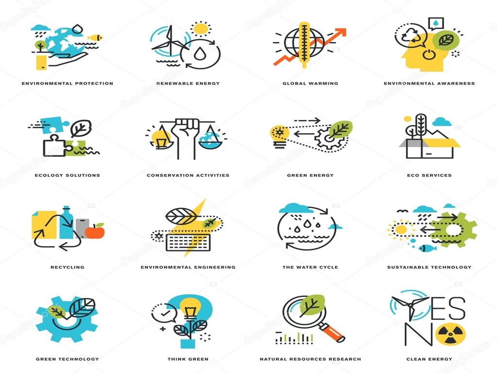

Apakah kamu mahasiswa dari prodi-prodi dibawah ini?

Dewasa ini isu lngkungan bukan lagi merupakan sisi minor dalam kehidupan manusia. Isu lingkungan saat ini menjadi isu strategis
selain ekonomi dan politik. Perhatian masyarakat lokal maupun internasional semakin meningkat menjadi kesadaran publik. Hal ini dibuktikan dengan kian banyaknya diskusi
publik, seminar, workshop, pelatihan, hingga pembukaan program-program studi baru di lembaga/ institusi pendidikan tinggi
yang berkaitan dengan tema limgkungan.
Permasalahan lingkungan hidup menjadi penting sebab dampak dan pengaruhnya terhadap berbagai aspek kehidupan lainnya.
Jika masalah lingkungan hidup tidak segera dicari solusinya, maka keberlanjutan kehidupan bumi dan manusia akan terancam.
Sebagaimana kita ketahui bahwa alam adalah sumber pemenuhan kebutuhan hidup manusia dan makhluk hidup lainnya. Kerusakan Alam
berarti sama dengan dukung kehidupan terganggu.
Forum Diskusi

Masalah lingkungan hidup di Indonesia dan dunia semakin banyak dan penting untuk segera dicari solusinya.
Apa saja daftar masalah lingkungan, penyebab dan solusinya yang penting untuk kita ketahui? Kita akan mencoba membahasnya.
1. Polusi
Masalah lingkungan hidup yang pertama adalah polusi atau pencemaran lingkungan hidup. Polusi udara,
air dan tanah memerlukan waktu jutaan tahun agar dapat normal kembali. Sektor Industri dan asap kendaraan bermotor
adalah sumber pencemaran utama.
2. Perubahan Iklim
Perubahan iklim atau pemanasan global. Perubahan iklim seperti pemanasan global adalah hasil dari praktik manusia
seperti emisi gas rumah kaca. Pemanasan global menyebabkan meningkatnya suhu lautan dan permukaan bumi sehingga
menyebabkan mencairnya es di kutub dan kenaikan permukaan air laut.
3. Populasi
Kelebihan populasi. Populasi planet ini mencapai tingkat yang tidak berkelanjutan karena menghadapi
kekurangan sumber daya seperti air, bahan bakar dan makanan. Ledakan populasi di negara-negara maju dan berkembang
yang terus menyebabkan semakin langkanya sumber daya.
4. Penipisan Sumber Daya Alam
Penggunaan bahan bakar fosil seperti minyak bumi bertanggung jawab menciptakan pemanasan global dan perubahan iklim.
Secara global, mulai banyak fihak yang mulai beralih menggunakan sumber daya terbarukan, seperti listrik tenaga surya,
biogas, mobil tenaga matahari, yang diterapkan oleh negara maju.
5. Pembuangan Limbah
Permasalahan lingkungan hidup selanjutnya adalah pembuangan limbah. Hal ini terutama limbah plastik dan
sampah perkotaan seperti di Kali Ciliwung di Jakarta atau kota-kota di Indonesia. Selain limbah rumah tangga,
limbah dari sektor industri yang sering dibuang ke sungai juga menyebabkan ikan-ikan mati dan hancurnya
ekosistem sungai.
6. Kepunahan Keanekaragaman Hayati
Aktivitas manusia yang menyebabkan kepunahan spesies dan habitat serta hilangnya keanekaragaman hayati.
Aktifitas perburuan satwa yang tidak berkelanjutan untuk memenuhi kebutuhan protein manusia,
seperti perburuan telur penyu atau kura-kura indonesia yang menyebabkan kura-kura sungai punah.
Punahnya spesies berarti punahnya sumber pemenuhan kebutuhan hidup manusia.
7. Deforestasi atau Penggundulan Hutan
Persoalan lingkungan yang tidak kalah penting adalah deforestasi. Pembukaan hutan untuk pengembangan sektor perkebunan,
erutama sawit, menyebabkan pelepasan karbon ke bumi sehingga meningkatkan perubahan suhu bumi.
8. Fenomena Pengasaman Laut
Ini adalah dampak langsung dari produksi berlebihan gas Karbon Dioksida (CO2). Dua puluh lima persen gas CO2 yang
dihasilkan oleh manusia. Keasaman laut telah meningkat dalam 250 tahun terakhir. Pada tahun 2100, mungkin meningkat
sekitar 150%. Demikian menurut situs global change. Dampak utama adalah pada punahnya kerang dan plankton,
sumber makanan ikan. Jika ikan kehilangan makanan, apa yang akan terjadi pada manusia?
9. Lapisan Ozon
Lapisan ozon merupakan lapisan perlindungan yang tak terlihat yang menutupi planet bumi, melindungi kita dari
radiasi sinar matahari yang berbahaya. Penipisan lapisan Ozon diperkirakan disebabkan oleh polusi yang disebabkan
oleh gas Klorin dan Bromida yang ditemukan di Chloro-floro karbon (CFC).
10. Hujan Asam
Hujan asam terjadi karena adanya polutan tertentu di atmosfer. Hujan asam dapat disebabkan karena pembakaran bahan bakar
fosil atau akibat meletusnya gunung berapi atau membusuknya vegetasi yang melepaskan
sulfur dioksida dan nitrogen oksida ke atmosfer. Hujan asam merupakan permasalahan
lingkungan yang dapat memiliki efek serius pada kesehatan manusia, satwa liar dan spesies air.
11. Rekayasa Genetika
Produk makanan, peternakan, pertanian saat ini benyak dihasilkan oleh teknologi rekayasa genetika atau modifikasi genetik.
Modifikasi genetik makanan menggunakan bioteknologi disebut rekayasa genetika. Modifikasi genetik dari hasil makanan,
secara umum, akan meningkatkan racun dan resiko penyakit bagi menusia. Genetika tanaman atau satwa yang dimodifikasi
dapat menyebabkan masalah serius bagi kesehatan manusia serta keseimbangan ekosistem.
Download Materi
Page ini berisi beberapa file yang dapat diunduh
E-book
Jurnal
Skripsi
Info Event
Page ini berisi info kegiatan-kegiatan atau agenda yang bertemakan Lingkungan Hidup